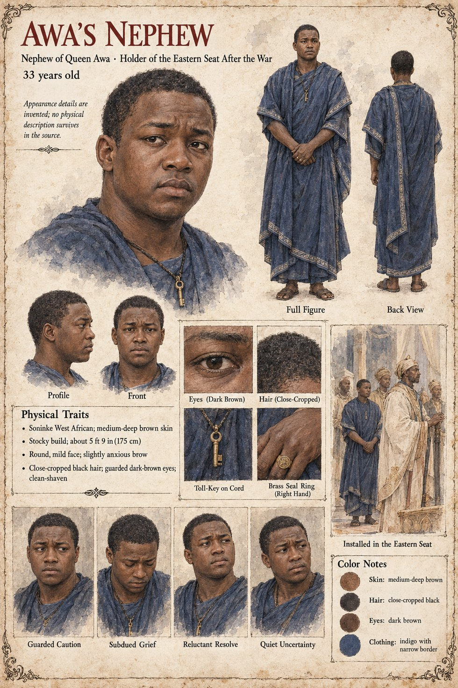

Awa's Nephew
Nephew of Queen Awa · put in the eastern seat after the war · unnamed · 33 years old on his sheet
One clause in Chapter Fifteen. The peace that exhausts the war is not a settlement so much as an exhaustion, and its terms are the terms of the sandbar, more or less, with the dead man's name struck out and a nephew of Awa's put in the eastern seat; the trial is dropped, and Awa is permitted to live out her days in the house she has been given. The seat is the one the sandbar had meant for Alassane, as the wording reads. The manuscript gives the nephew no name, age or words, and does not say whether he fought.
The manuscript gives the relationship and the seat. The sheet's age of 33 is its own, and a note on it says Appearance details are invented; no physical description survives in the source. Its stocky 5 ft 9 in (175 cm) build, round mild face with a slightly anxious brow, close-cropped black hair, guarded dark-brown eyes, clean-shaven jaw, toll-key on a cord, brass seal ring on the right hand and indigo dress with a narrow border are its own, as are its panels Guarded Caution, Subdued Grief, Reluctant Resolve and Quiet Uncertainty and its scene Installed in the Eastern Seat.
“a nephew of Awa's put in the eastern seat”